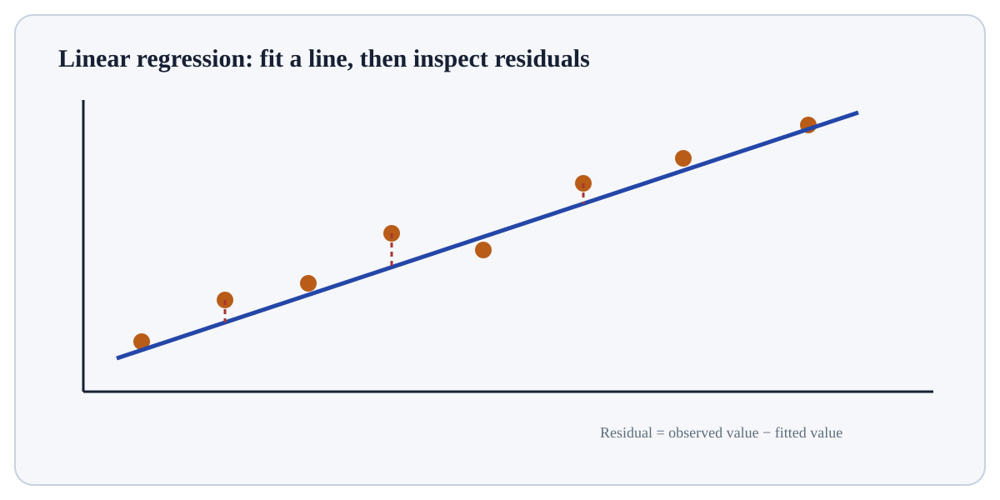

Lasso Regression is a regularised linear-model technique.
ConceptWorked examplePracticeKnowledge check
Textbook walkthrough
What Lasso Regression actually means
Lasso Regression is a regularised linear-model technique. Regularisation adds a penalty to the data-fitting loss so coefficient magnitude is controlled, trading a small amount of bias for potentially lower variance and better generalisation.
Lasso Regression matters because linear models provide an interpretable baseline and expose central ideas such as coefficient estimation, probability links and regularisation. They also show clearly how preprocessing and penalty choices affect fitted parameters.
Deeper walkthrough
Read Lasso Regression as a mechanism, not a recipe
Treat this as a sequence of observable decisions rather than one opaque command. Stage 1: Standardise features when penalty comparability requires it. Stage 2: Fit the linear prediction loss plus a regularisation penalty. Stage 3: Ridge (L2) shrinks coefficients smoothly; lasso (L1) can set some coefficients exactly to zero; elastic net mixes both. Final checkpoint: Interpret coefficients on the scale induced by preprocessing.
Mechanism
Follow the transformation
Standardise features when penalty comparability requires it.
Fit the linear prediction loss plus a regularisation penalty.
Ridge (L2) shrinks coefficients smoothly; lasso (L1) can set some coefficients exactly to zero; elastic net mixes both.
Evidence
Know what would convince you
Fit a tiny or baseline case first and confirm prediction shape/range and a few outputs.
Evaluate with the same held-out folds/metric as competing models and inspect variability, not just the mean.
Useful distinctionOLS: No coefficient penalty.

Visual demonstration: use the diagram to trace the main objects and state changes involved in Lasso Regression.
Click a stage to inspect what happens, what changes, and what should be checked before moving on.
Stage 1
Standardise features when penalty comparability requires…
Standardise features when penalty comparability requires it. For Lasso Regression, identify the exact state before this stage, the operation or rule applied here, and the observable state afterwards so the mechanism remains inspectable.
State focus: identify exactly what changed at this stage and what observable evidence confirms that change.
How it works
Trace the mechanism step by step
Standardise features when penalty comparability requires it.
Fit the linear prediction loss plus a regularisation penalty.
Ridge (L2) shrinks coefficients smoothly; lasso (L1) can set some coefficients exactly to zero; elastic net mixes both.
Select penalty strength inside cross-validation.
Interpret coefficients on the scale induced by preprocessing.
Worked demonstration
Make the concept concrete
Demonstration
Text example
Lasso objective = squared-error loss + λ Σ|βj|.
As λ increases, coefficients shrink and some can become exactly zero.
Expected / illustrative result
L1 regularisation can create sparse models, but correlated predictors can make the selected feature set unstable.
Interpret the result.
For Lasso Regression, connect the reported result to the exact training/validation/prediction step that produced it and check one prediction, fold or metric component independently.
Distinctions & related ideas
Know what this is — and what it is not
OLSNo coefficient penalty.
Ridge / L2Penalty proportional to sum of squared coefficients.
Lasso / L1Penalty proportional to sum of absolute coefficients; sparse solutions possible.
Elastic NetWeighted combination of L1 and L2 penalties.
Use deliberately
When it is appropriate
Use Lasso Regression when its inductive assumptions fit the feature/target structure and it can be compared fairly with a simpler baseline on unseen data.
Boundary conditions
When to stop or reconsider
Prefer a simpler or different model when the sample size, representation, computational budget, interpretability requirement or data geometry conflicts with this method.
Common mistakes
Failure modes to recognise
Judging the model only by training fit instead of generalisation on held-out data.
Comparing models with inconsistent preprocessing, folds or evaluation metrics.
Tuning complexity without checking a simple baseline, error patterns and variance across splits.
Verification
How to check the result
Fit a tiny or baseline case first and confirm prediction shape/range and a few outputs.
Evaluate with the same held-out folds/metric as competing models and inspect variability, not just the mean.
Inspect errors/residuals or decision boundaries and vary one key hyperparameter to verify expected behaviour.
Hands-on practice
Demonstrate understanding
Try this:
Build a tiny, inspectable example of Lasso Regression. First standardise features when penalty comparability requires it. Then fit the linear prediction loss plus a regularisation penalty. Write the expected result before running it, and explain one condition that would make the result misleading or invalid.
Start with a small baseline and a fixed validation split/fold assignment. Predict what increasing or decreasing one complexity control should do before testing it.
Knowledge check
Check reasoning, not memorisation
Before trusting a result from Lasso Regression, which check provides the strongest evidence that you understand and applied it correctly?
Quick reference
Keep the important distinctions visible
Step 1Standardise features when penalty comparability requires it.
Step 2Fit the linear prediction loss plus a regularisation penalty.
Step 3Ridge (L2) shrinks coefficients smoothly; lasso (L1) can set some coefficients exactly to zero; elastic net mixes both.
Lasso Regression is a regularised linear-model technique. Regularisation adds a penalty to the data-fitting loss so coefficient magnitude is controlled, trading a small amount of bias for potentially lower variance and better generalisation.
Standardise features when penalty comparability requires it.
Judging the model only by training fit instead of generalisation on held-out data.
Fit a tiny or baseline case first and confirm prediction shape/range and a few outputs.